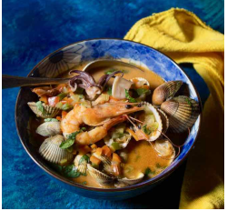

La cazuela de mariscos es una excelente sopa de pescado colombiana. Se trata de una especialidad de la hermosa costa caribeña de Colombia, aunque este plato es muy probablemente de origen español. Proviene del noreste del país, Cataluña, donde los mariscos frescos son abundantes y populares.
 Puede agregar todo lo que encuentre de mariscos como crustáceos, mejillones, camarones, cigalas,
almejas, berberechos, navajas, vieiras y un caldo muy perfumado para cocinar. Los españoles añaden
vino blanco, por supuesto, pero también polvo de almendras, lo que hace que este plato sea tan único,
además de agregar cierta consistencia a la sopa.
En Colombia, este espesor se obtiene con un producto que es muy apreciado por la población, la leche de
coco, que aporta dulzura al plato y lo hace más atractivo para los niños o para quienes no son tan fanáticos de los mariscos.